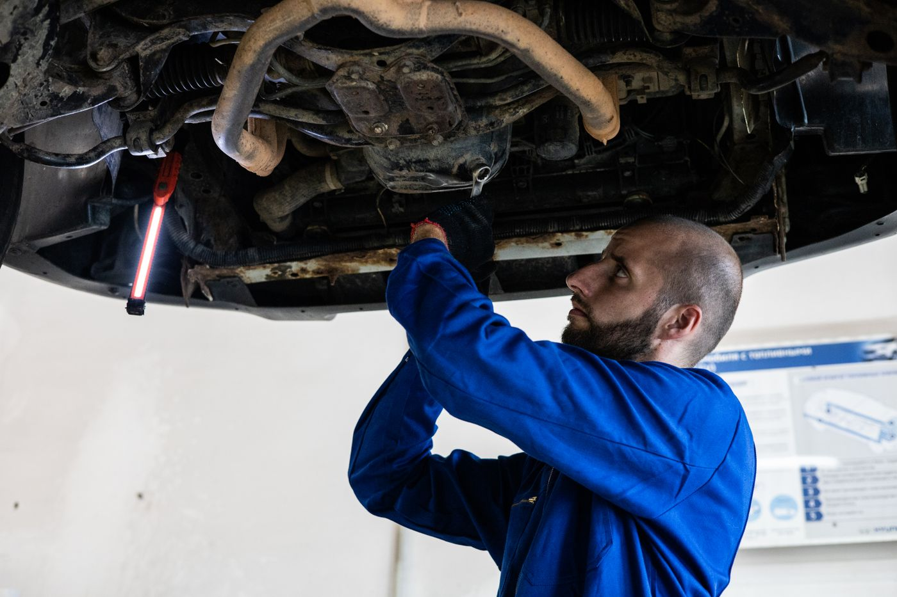

Комп'ютерна діагностика
Зчитування помилок і перевірка основних систем автомобіля.
від 600 ₴↗
Точна діагностика, чесний ремонт і турбота, яку відчуваєш за кермом.
СЕРВІС, НА ЯКИЙ МОЖНА ПОКЛАСТИСЬ
Від планового обслуговування до складного ремонту — пояснюємо кожен крок і погоджуємо роботи до початку.
Зчитування помилок і перевірка основних систем автомобіля.
Пошук несправностей, обслуговування та ремонт агрегатів.
Мастило та фільтри за рекомендаціями виробника авто.
Перевірка підвіски, амортизаторів і рульового керування.
Монтаж, балансування коліс і сезонна заміна шин.
Огляд, заміна колодок і дисків, перевірка гальм.
Ціни орієнтовні та залежать від марки авто й обсягу робіт. Остаточну вартість погоджуємо до початку ремонту.

УВАГА ДО КОЖНОЇ ДЕТАЛІУ ГАРАЖ 24 ми віримо: хороший сервіс починається з уважного діалогу. Спершу розбираємось у причині, потім пояснюємо варіанти — і лише після вашого погодження беремося до роботи.
Команда майстрів, сучасне обладнання та чітка комунікація на кожному етапі — щоб ви знали, що відбувається з автомобілем і за що платите.
Знайти нас ↗Погляньте на деталі автомобілів та робочі процеси в автосервісі.
Ми не просто лагодимо автомобілі.
Ми повертаємо впевненість у дорозі.
«Пояснили, що саме стукає в підвісці, показали зношені деталі. Узгодили кошторис до ремонту — без неприємних сюрпризів».
«Записався на діагностику, прийняли вчасно. Знайшли проблему, швидко все владнали й дали рекомендації на майбутнє».
«Приємна комунікація і відчуття, що твоїм авто справді займаються. Після заміни гальм машина їде впевнено».
Зателефонуйте — відповімо на запитання та підберемо зручний час.
+38 (067) 240 24 24 ↗вул. Зелена, 147
Львів, Україна
Пн–Пт 09:00 — 19:00
Сб 10:00 — 16:00
Нд вихідний